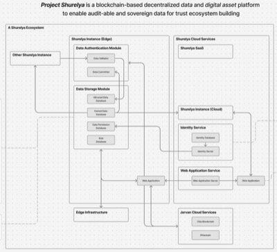

CodeGreen ORG. (Armadillo Data)
Senior Engineer - remote (Jan 2023 - Dec 2025) - 3 yr
Blockchain data application.

- Built admin consoles and dashboards using ReactJS.
- Ran SSR (server-side rendering) servers on Vercel.
- Built API servers using Golang and Python.